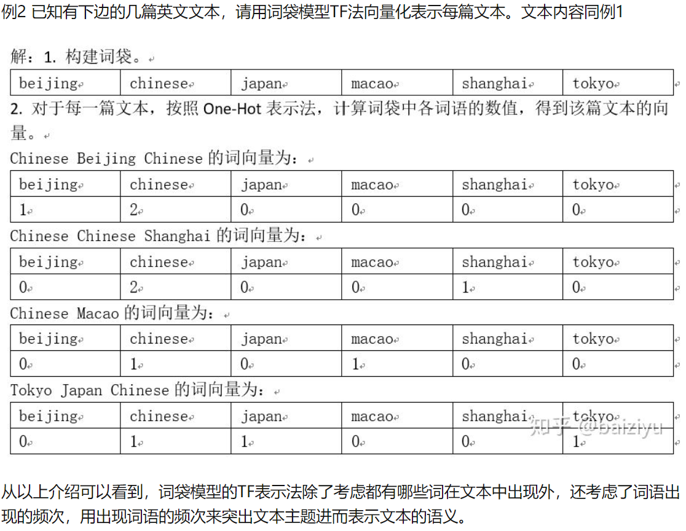

用Python搭建一个电影推荐系统
之前我们以电影推荐为例，介绍了基于内容的推荐算法。可能各位看的有些枯燥，没关系，现在来做点有趣的事情：动手去实现它！
查看数据集
使用的数据集是Kaggle上的TMDb，该数据集包含两个.csv文件：movies.csv和credits.csv。
首先读取数据集：
1 | movies = pd.read_csv('tmdb_5000_movies.csv') |

数据集中包含了4803部电影的相关信息，包括电影类型，关键词，电影名字等，但并不包含单个用户的信息。因此，接下来，我们将主要根据每部电影的相关信息，从中抽取出每一部电影的特征，这些特征将用于计算电影之间的相似度，从而完成电影的推荐。
数据处理
为了提取到每部电影(每行对应一部电影)的特征，需要先对数据做些处理。
将movie和credits这两张表合并：
1 | movies = movies.merge(credits,on='title') |
这样，movie就多了3列credits中的特征。
然后，去除本次用不到的特征：
1 | movies = movies[['movie_id','title','overview','genres','keywords','cast','crew']] |

可以看到，此时的movie表中只包含筛选出来的7列，其中，前两列用于标识每一部电影，后5列是特征列。接下来，我们将继续处理后面的5列，从中提取出每部电影的特征。
对于后5列，除了overview外，其余4列都是由字典作为元素组成的列表，每个字典都包含了多个键值对，我们需要将有用的键对应的值给单独提取出来，而其余信息则可以丢弃。
定义一个转换函数，用于提取name键对应的值：
1 | import ast |
然后，应用上面定义的函数：
1 | #提取电影类型 |
此时，数据变成了这个样子：
现在来处理最后一列：工作人员的信息。
最后一列包含了负责诸如导演，化妆，美术等工作人员的信息。这里，我们只提取导演的名字。同样先定义一个函数：
1 | def fetch_director(text): |
然后应用在最后一列：
1 | movies['crew'] = movies['crew'].apply(fetch_director) |
此时数据如下：
去除后四列数据中的空格：
1 | def collapse(L): |
至此，5列特征处理完成，现在要做的是把它们拼接起来，得到一个大的特征，并将无用特征剔除：
1 | movies['overview'] = movies['overview'].apply(lambda x:x.split()) |
此时的数据格式如下：
可以取一条数据的tag看一下：
可以看到，此时的tag融合了之前所说的5个特征列的信息。
至此，数据处理结束。
提取特征
这里使用sklearn中封装好的CountVectorizer提取每部电影的特征。关于其原理，推荐文末参考资料[2]，这里借用文中的栗子来简要描述下该方法具体做的事情：

每一个文档ID可以对应本文中每部电影的ID。
获取特征向量：
1 | from sklearn.feature_extraction.text import CountVectorizer |
得到的vector的维度是[4806,5000]，含义如下：共4806部电影，每部电影的特征用一个5000维的向量来表示。
现在已经有了每部电影的特征向量，接下来就可以通过计算每部电影之间的相似度来进行电影推荐了。这里同样直接调用sklearn封装好的余弦相似度方法来度量特征之间的距离。
1 | from sklearn.metrics.pairwise import cosine_similarity |
这样得到的similarity是一个[4806,4806]的矩阵，该矩阵第$i$行第$j$列处的元素代表了第$i$部电影和第$j$部电影的相似度。
开启推荐
为了做推荐，这里写一个函数，作为推荐的接口：
1 | def recommend(movie): |
举个栗子：推荐和Just My Luck类似的电影。
只需调用上面定义好的接口即可：
屏幕上将输出两项内容：第一项是被推荐的电影名字，第二项是相似度得分。
至此，一个简易的电影推荐系统就搭建好了。
最后，可以将计算得到的相似度矩阵和处理好的数据保存到本地，用于后续可能的线上部署：
1 | import pickle |
以上数据集以及代码已打包，公众号后台回复”推荐”即可获取。
参考：